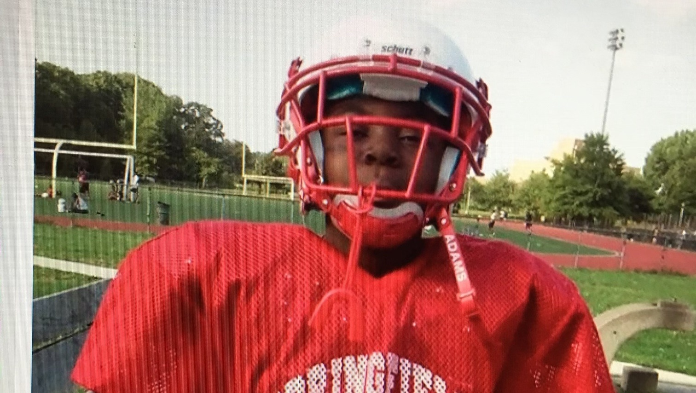

by Michael Fadugbagbe

I'm the writer and director of "Waterboy". It's a film inspired by my experience as the waterboy freshman year of high school. That was six years ago and since then I've worked as a Director of Photography on three thesis films, crewed on four, and acted in two; not to mention performing improv comedy for 24 hours straight (twice!) and even designed my own fashion line.
I've always had a lot of creative interests, but right now, with the help of a great and diverse group of students, I'm focused completely on creating an ambitious project about special people coming from unlikely places.
Michael Fadugbagbe, age 11, before practice
Please consider supporting me and my wonderful crew with finishing our film and gaining access to film festivals, so that we can bring this wonderful project to life.
One day before playing the best team in their Conference, the worst high school football team in the state of Connecticut must choose between the brutish strategy of their coach or the chaotic one of their waterboy.
No raffles, sweepstakes, giveaways, or returns on investment are offered in exchange for any donations made to this GoFundMe.
Director, Writer: Michael Fadugbagbe
Director of Photography: Spencer Turner
Executive Producer: Lia Franklin
Producers: Olivia Berger, Michael Fadugbagbe
Assistant Director: Liz Pace
1st Assistant Camera: Tracy Wu
2nd Assistant Camera: Muhammad Abdur-Rahman
Gaffer: Pelumi Sokunbi
Script Supervisor: Reese Chahal
Casting: Georgia Reed-Stamm
Associate Producers: Candice Walker, Theo Baldwin-Edwards
Production Design: Sanaa Mia
Production Assistant: Isidor Marcus